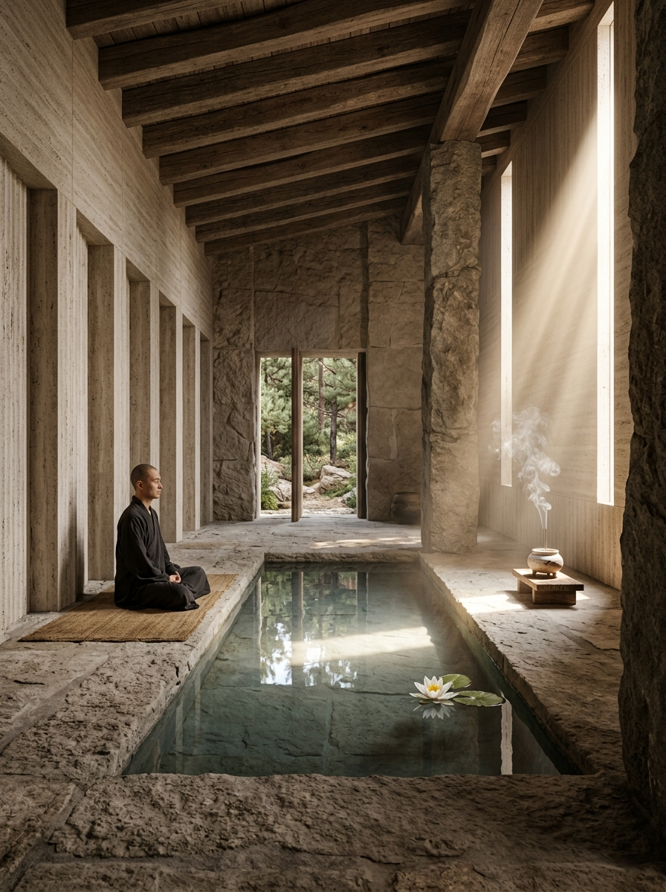

SÄULE I
Verlernen, was du gelernt hast
Kognitive Entlastung & Loslassen
Der Geist füllt sich täglich mit Urteilen, Ängsten und starren Vorstellungen. Yoda lehrt uns das radikale Nicht-Wissen: Die Fähigkeit, den Moment ohne Vorurteil und ohne Zwang zu betrachten. Nur ein leeres Gefäß kann neues Wasser fassen.
„Befreie deinen Geist von dem, was du glaubst zu müssen.“